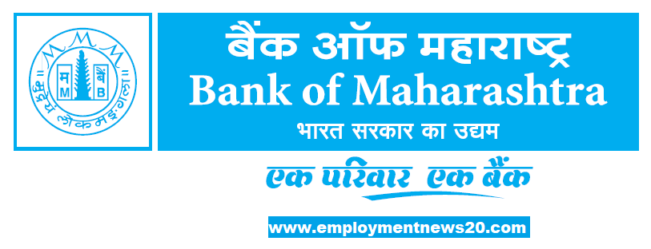

Bank of Maharashtra
Bank of Maharashtra is a nationalised bank under the ownership of Ministry of Finance , Government of India. The bank had 15 million customers across the country with 2001 branches as of Dec 2021. It has the largest network of branches of any nationalised bank in the state of Maharashtra.[2] The total business of the bank crossed ₹ 2,66,000 lakh crore as on 31 December 2020.
History
The bank was founded by V. G. Kale and D. K. Sathe in Pune, India. The bank was registered on 16 September 1935 with an authorized capital of US$1 million and became operational on 8 February 1936. It provided financial assistance to small business and gave birth to many industrial houses. The bank was nationalised in 1969. A. S Rajeev assumed charge as Managing Director & CEO of the bank on 2 December 2018.[3] Hemant Kumar Tamta joined as Executive Director on 31 December 2018. A. B. Vijayakumar joined as Executive Director on 10 March 2021.